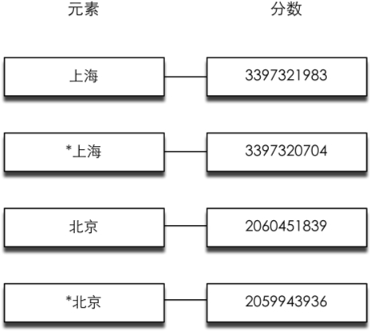

5.4 Node.js与Redis
Redis官方推荐的Node.js的Redis客户端可以选择的有node_redis[7] 和ioredis[8] ，相比而言前者发布时间较早，而后者的功能则更加丰富一些。从接口来看两者的使用方法大同小异，本文将以ioredis为例讲解。
使用npm install ioredis命令安装最新版本的ioredis。
首先加载ioredis模块：
var Redis = require('ioredis');
下面的代码将创建一个默认连接到地址127.0.0.1，端口6379的Redis连接：
var redis = new Redis();
也可以显式地指定需要连接的地址：
var redis = new Redis(6379, '127.0.0.1');
由于Node.js的异步特性，在处理返回值的时候与其他客户端差别较大。还是以GET/SET命令为例：
redis.set('foo', 'bar', function () {
//此时 SET 命令执行完并返回结果，
//因为这里并不关心 SET命令的结果，所以我们省略了回调函数的形参。
redis.get('foo', function (error, fooValue) {
//error 参数存储了命令执行时返回的错误信息，如果没有错误则返回 null。
//回调函数的第二个参数存储的是命令执行的结果
console.log(fooValue); // 'bar'
});
});
使用ioredis执行命令时需要传入回调函数（callback function）来获得返回值，当命令执行完返回结果后ioredis会调用该函数，并将命令的错误信息作为第一个参数、返回值作为第二个参数传递给该函数。同时ioredis还支持Promise形式的异步处理方式，如果省略最后一个回调函数，命令语句会返回一个Promise值，如：
redis.get('foo').then(function (fooValue) {
//fooValue 即为键值
});
关于Node.js的异步模型的介绍超出了本书的范围，有兴趣的读者可以访问Node.js的官网[9] 了解更多信息。
Node.js的异步模型使得通过ioredis调用Redis命令的表现与Redis的底层管道协议十分相似：调用命令函数时（如redis.set()）并不会等待Redis返回命令执行结果，而是直接继续执行下一条语句，所以在Node.js中通过异步模型就能实现与管道类似的效果。上面的例子中我们并不需要SET命令的返回值，只要保证SET命令在GET命令前发出即可，所以完全不用等待SET命令返回结果后再执行GET命令。因此上面的代码可以改写成：
//不需要返回值时可以省略回调函数
redis.set('foo', 'bar');
redis.get('foo', function (error, fooValue) {
console.log(fooValue); // 'bar'
});
不过由于SET和GET并未真正使用Redis的管道协议发送，所以当有多个客户端同时向 Redis 发送命令时，上例中的两个命令之间可能会被插入其他命令，换句话说，GET命令得到的值未必是“bar”。
虽然Node.js的异步特性给我们带来了相对更高的性能，然而另一方面使用Redis实现某个功能时我们经常需要读写若干个键，而且很多情况下都会依赖之前命令的返回结果。这时就会出现嵌套多重回调函数的情况，影响代码可读性。就像这样：
redis.get('people:2:home', function (error, home) {
redis.hget('locations', home, function (error, address) {
redis.exists('address:' + address, function (error, addressExists) {
if (addressExists) {
console.log('地址存在。');
} else {
redis.exists('backup.address:' + address, function (error, backupAddress Exists) {
if (backupAddressExists) {
console.log('备用地址存在。');
} else {
console.log('地址不存在。');
}
});
}
});
});
});
上面的代码并不是极端的情况，相反在实际开发中经常会遇到这种多层嵌套。为了减少嵌套，可以考虑使用 Async[10] 、Step[11] 等第三方模块。如上面的代码可以稍微修改后使用Async重写为：
async.waterfall([
function (callback) {
redis.get('people:2:home', callback);
},
function (home, callback) {
redis.hget('locations', home, callback);
},
function (address, callback) {
async.parallel([
function (callback) {
redis.exists('address:' + address, callback);
},
function (callback) {
redis.exists('backup.address:' + address, callback);
},
], function (err, results) {
if (results[0]) {
console.log('地址存在。');
} else if (results[1]) {
console.log('备用地址存在。');
} else {
console.log('地址不存在。');
}
});
}
]);
另外，可以使用co[12] 模块借助ES6的Generator特性来将ioredis的返回结果“串行化”：
var co = require('co');
co(function* () {
var result = yield redis.get('foo');
return result;
}).then(function (fooValue) {
console.log(fooValue);
});
1．HMSET/HGETALL
ioredis同样支持在HMSET命令中使用对象作参数（对象的属性值只能是字符串），相应的HGETALL命令会返回一个对象。
2．事务
事务的用法如下：
var multi = redis.multi();
multi.set('foo', 'bar');
multi.sadd('set', 'a');
mulit.exec(function (err, replies) {
//replies 是一个数组，依次存放事务队列中命令的结果
console.log(replies);
});
或者使用链式调用：
redis.multi()
.set('foo', 'bar')
.sadd('set', 'a')
.exec(function (err, replies) {
console.log(replies);
});
3．“发布/订阅”模式
Node.js 使用事件的方式实现“发布/订阅”模式。现在创建两个连接分别充当发布者和订阅者：
var pub = new Redis();
var sub = new Redis();
然后让sub订阅chat频道并在订阅成功后发送一条消息：
sub.subscribe('chat', function () {
pub.publish('chat', 'hi!');
});
定义当接收到消息时要执行的回调函数：
sub.on('message', function (channel, message) {
console.log('收到' + channel + '频道的消息：' + message);
});
运行后可以看到打印的结果：
$ node testpubsub.js
收到chat频道的消息：'hi!'
补充知识 在 ioredis 中建立连接的过程也是异步的，执行 redis = new Redis()后连接并没有立即建立完成。在连接建立完成前执行的命令会被加入到离线任务队列中，当连接建立成功后ioredis会按照加入的顺序依次执行离线任务队列中的命令。
很多场合下网站都需要根据访客的IP地址判断访客所在地。假设我们有一个地名和IP地址段的对应表[13] ：
上海: 202.127.0.0 ~ 202.127.4.255
北京: 122.200.64.0 ~ 122.207.255.255
如果用户的IP地址为122.202.2.0，我们就能根据这个表知道他的地址位于北京。Redis可以使用一个有序集合类型的键来存储这个表。
首先将表中的IP地址转换成十进制数字：
上海: 3397320704 ~ 3397321983
北京: 2059943936 ~ 2060451839
然后使用有序集合类型记录这个表。方式为每个地点存储两条数据：一条的元素值是地点名，分数是该地点对应的最大IP地址。另一条是“*”加上地点名，分数是该地点对应的最小IP地址，如图5-9所示。

图5-9 使用有序集合键存储地点和相应IP范围的存储结构
在查找某个IP地址属于哪个地点时先将该IP地址转换成10进制数字，然后在有序集合中找到大于该数字的最小的一个元素，如果该元素不是以“*”开头则表示找到了，如果是则表示数据库中并未记录该IP地址对应的地名。
如我们想找到“122.202.2.0”的所在地，首先将其转换成数字“2060059136”，然后在有序集合中找到第一个大于它的分数为“2060451839”，对应的元素值为“北京”，不是以“*”开头，所以该地址的所在地是北京。
下面介绍使用Node.js实现这一过程。首先将表转换成CSV格式并存为ip.csv：
上海,202.127.0.0,202.127.4.255
北京,122.200.64.0,122.207.255.255
而后使用node-csv模块[14] 加载该csv文件：
var fs = require('fs');
var csv = require('csv');
csv.parse(fs.readFileSync('ip.csv', 'utf8'), function (err, records) {
records.forEach(function (record) {
importIP(record);
});
});
读取每行数据时node-csv-parser模块都会调用importIP回调函数。该函数实现如下：
var Redis = require('redis');
var redis = new Redis();
//将 IP 地址数据加入 Redis
//输入格式："['上海', '202.127.0.0', '202.127.4.255']"
function importIP (data) {
var location = data[0];
var minIP = convertIPtoNumber(data[1]);
var maxIP = convertIPtoNumber(data[2]);
//将数据加入到有序集合中，键名为'ip'
redis.zadd('ip', minIP, '*' + location, maxIP, location);
}
其中convertIPtoNumber函数用来将IP地址转换成十进制数字，
//将 IP 地址转换成 10 进制数字
//convertIPtoNumber('127.0.0.1') => 2130706433
function convertIPtoNumber(ip) {
var result = '';
ip.split('.').forEach(function (item) {
item = ~~item;
item = item.toString(2);
item = pad(item, 8);
result += item;
});
return parseInt(result, 2);
}
pad函数用于将二进制数补全为8位：
//在字符串前补'0'。
//pad('11', 3) => '011'
function pad(num, n) {
var len = num.length;
while(len < n) {
num = '0' + num;
len++;
}
return num;
}
至此数据准备工作完成了，现在我们提供一个接口来供用户查询：
var readline = require('readline');
var rl = readline.createInterface({
input: process.stdin,
output: process.stdout
});
rl.setPrompt('IP> ');
rl.prompt();
rl.on('line', function (line) {
ip = convertIPtoNumber(line);
redis.zrangebyscore('ip', ip, '+inf', 'LIMIT', '0', '1', function (err,result) {
if (!Array.isArray(result) || result.length === 0) {
//该 IP 地址超出了数据库记录的最大 IP 地址
console.log('No data.');
} else {
var location = result[0];
if (location[0] === '*') {
//该 IP 地址不属于任何一个 IP 地址段
console.log('No data.');
} else {
console.log(location);
}
}
rl.prompt();
});
});
运行后的结果如下：
$ node ip_search.js
IP> 127.0.0.1
No data.
IP> 122.202.23.34
北京
IP> 202.127.3.3
上海
上面的代码的实际查找范围是一个半开半闭区间。如果想实现闭区间查找，读者可以在比对“*”时同时比较元素的分数和查找的IP地址是否相同。
注 释
[1]. https://github.com/nrk/predis
[2]. https://github.com/nicolasff/phpredis
[4]. https://github.com/redis/redis-rb
[5]. https://github.com/andymccurdy/redis-py
[6]. ZINTERSTORE 命令的参数除了有序集合类型外还可以是集合类型，此时的集合类型会被作为分数为1的有序集合类型处理。
[7]. https://github.com/mranney/node_redis
[8]. https://github.com/luin/ioredis
[10]. https://github.com/caolan/async
[11]. https://github.com/creationix/step
[12]. https://github.com/tj/co
[14]. 见https://github.com/wdavidw/node-csv。安装方法为 npm install csv。